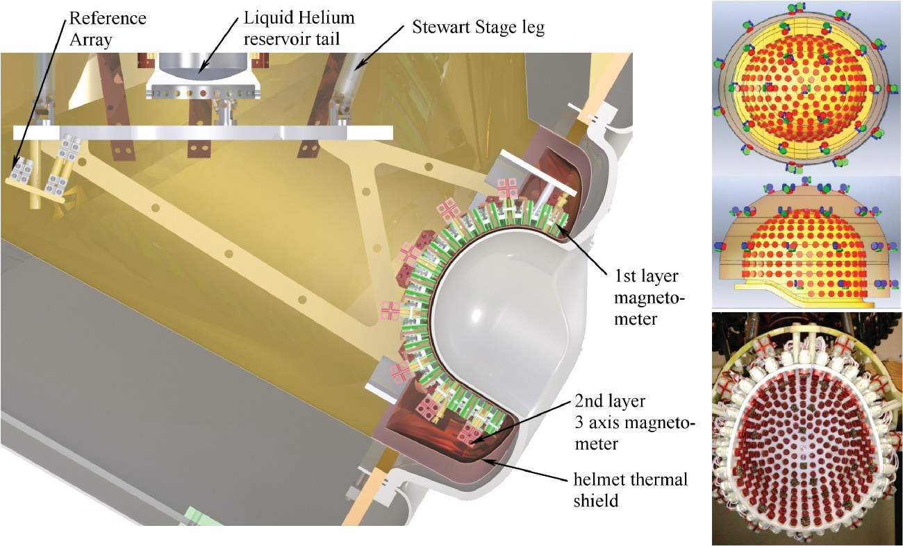

<!--
@license
Copyright (c) 2016 The Polymer Project Authors. All rights reserved.
This code may only be used under the BSD style license found at http://polymer.github.io/LICENSE.txt
The complete set of authors may be found at http://polymer.github.io/AUTHORS.txt
The complete set of contributors may be found at http://polymer.github.io/CONTRIBUTORS.txt
Code distributed by Google as part of the polymer project is also
subject to an additional IP rights grant found at http://polymer.github.io/PATENTS.txt
-->

<link rel="import" href="../../bower_components/polymer/polymer.html">

<link rel="import" href="../common-element/footer-element.html">
<link rel="import" href="../common-element/toc-behavior.html">
<link rel="import" href="../common-element/member-card-element.html">

<link rel="import" href="../common-element/common-styles.html">

<dom-module id="meg-canmychildparticipate">
  <template>
    <style include="common-styles"></style>
    <style>
      :host {
        display: block;
      }
    </style>

    <article>
      <header class="center">
        <h1>Can My Child Participate?</h1>
      </header>

      <nav>
        <div>Contents</div>
        <ul>
          <li><a href="#about" label="about" on-tap="__scrollTo">Who is eligible?</a></li>
          <li><a href="#about" label="about" on-tap="__scrollTo">Why is MEG necessary?</a></li>
          <li><a href="#about" label="about" on-tap="__scrollTo">Does MEG have any risks?</a></li>
        </ul>
      </nav>

      <main>
          <p>&nbsp;</p>

          <div style="height: 500px""align: center;">
            
          </div>
        <section>
          <h2 id="about" class="maxflow" class="maxflow">Who is eligible?</h2>

          <p>A child must meet the following criteria in order to be eligible for our studies:</p>
            <ul style="list-style-type:square">
              <li>Be a healthy neurotypically developing child</li>
                <li>Be between the ages of newborn and 4 years of age</li>
                <li>Have NO metallic implants of any kind</li>

        </section>
        <div style="height: 500px">
          

        </div>
        <section>
          <h2 id="about" class="maxflow" class="maxflow">Why is MEG necessary?</h2>
     <ul style="list-style-type:square">
          <li>MEG helps us to learn more about brain functions during early infancy in healthy children. Information gained from MEG recordings can allow us to help patients with neurological disorders, such as epilepsy, cerebral palsy, autism spectrum disorders, and Down syndrome.</li>
 </section>
 <div style="height: 500px""align: center;">
   
 </div>
 <section>
   <h2 id="about" class="maxflow" class="maxflow">Does MEG have any risks?</h2>

   <ul style="list-style-type:square">
     <li>There are no reports of injuries or harm to patients who have had MEG. MEG is silent and non-invasive. It does not produce any magnetic fields and does not involve any ionizing radiations.</li>
       <li>The magnetic signals made by brain activity are very small compared to those from the earth and electrical machines. The MEG scanner is placed in a room that protects from environmental noise called a magnetically shielded room (MSR).</li>
       <li>MEG is very sensitive to metal. Metal inside the MSR can change the results. Your child may not be able to have a scan if he/she is wearing dental braces that cannot be removed, has metal implants,  a pacemaker, a stent, a shunt, and/or aneurysm clips.</li>
       <li>Your child will be asked to remove, if possible, any metal objects that he/she has: glasses, jewelry, hair pins, removable dental braces, hearing aid.</li>
</section>

      </main>

      <footer-element></footer-element>

    </article>

  </template>

  <script>
    Polymer({
      is: 'meg-canmychildparticipate',
      behaviors: [TOCBehavior],
    });
  </script>
</dom-module>
